자기비파괴검사기사(구) (2005-03-06 기출문제)
1과목: 자기탐상시험원리
1. 그림과 같이 자기이력곡선상 넓은 루프(Loop)를 가지는 재료는 어떤 성질을 가지는가?
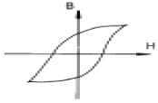
- 항자력이 적다.
- 리액턴스(Reactance)가 적다.
- 잔류자기가 적다.
- 투자율이 작다.
(정답률: 알수없음)

2. 자분탐상시험의 탈자방법에 대한 설명으로 옳지 못한것은?
- 관통형은 검사품을 코일속을 지나 이동시키므로써 코일의 자장으로부터 거리를 떨어뜨리는 방식이다.
- 평면형은 검사품을 전자석이 만들어내는 자장의 상부 중앙에 일정시간 유지시키는 방식이다.
- 극간형은 검사품을 전자석의 자극간에 끼워 전자석의 전류를 감쇠시키는 방식이다.
- 직류식 탈자는 표피효과가 매우 적기때문에 검사품의 심부까지 탈자가 가능하다.
(정답률: 알수없음)
3. 비형광자분 대신 형광자분을 사용할 때의 이점은?
- 시험품이 클 때에 유리하다.
- 규격에 합격되도록 하려면 형광자분을 사용해야한다.
- 검사속도를 빨리하고 자분모양을 정확히 조사할 수 있다.
- 오늘날 대부분의 공장에서 형광등을 사용하므로 편리하다.
(정답률: 알수없음)
4. 코일법을 사용, 자분탐상검사를 할 때 길이가 긴 시험체는 길이를 나누어서 검사를 해야 한다. 이 때 나누는 길이의 최대치는?
- 8인치(200mm)
- 10인치(250mm)
- 12인치(300mm)
- 18인치(450mm)
(정답률: 알수없음)
5. 다음 중 자분탐상시험을 적용할 수 없는 재료는?
- 고장력강
- 공구강
- 동합금
- 페라이트계 스테인리스강
(정답률: 알수없음)
6. 다음 중 자분탐상검사의 적용이 가장 효율적인 것은?
- 오스테나이트계 환봉의 표면 결함 검출
- 상자성의 시험체를 교류를 사용하여 표면의 결함 검출
- 아연 재질의 용접부 표면의 결함 검출
- 니켈 재질 기계부품의 표면 결함 검출
(정답률: 알수없음)
7. 아래 그림은 원형단면의 중심으로 부터 거리에 따른 자속 밀도의 값의 관계를 나타낸 것이다. 어떠한 전류로 자화한 것인가?
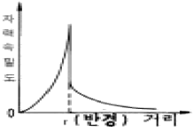
- 원형 막대기(bar)모양의 강자성체에 직류를 흘려 주었을 때이다.
- 원형 막대기 모양의 강자성체에 교류를 흘려 주었을 경우이다.
- 원형의 비자성 도체에 직류를 흘려 주었을 때이다.
- 원형의 비자성 도체에 교류를 흘려 주었을 때이다.
(정답률: 알수없음)
8. ASME code에 따라 습식자분을 사용하여 검사할 때 검사품의 표면 온도는 다음의 어떤 값을 초과해서는 안되는가?
- 15.3℃
- 57.2℃
- 89.6℃
- 135.4℃
(정답률: 알수없음)
9. 자계 H[A/m]중에 있는 자분을 자기 쌍극자로 생각할 때에 자분에 작용하는 기자력 F가 커지는 경우는?
- 자분의 진공 투자율이 작을수록
- 자분의 비투자율이 클수록
- 자분의 반자계 계수가 작을수록
- 자분의 체적이 작을수록
(정답률: 알수없음)
10. 다음 중 투자율이 공기보다 매우 높고, 자석에 강하게 끌리는 것은?
- 반자성체
- 비자성체
- 상자성체
- 강자성체
(정답률: 알수없음)
11. 한변의 길이가 L[m]인 정방형 도체 회로에 전류 Ｉ[A]가 흐를 때 회로의 중심에 있어서의 자계의 세기[A/m]는?
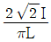
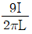
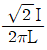
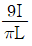
(정답률: 알수없음)
12. 아래 그래프는 슬리트(slit) 모양을 한 인공결함을 교류 자화하여 결함의 깊이와 누설자속 밀도와의 관계를 나타낸다. 이 그림에서 올바른 관계를 나타낸 번호는?
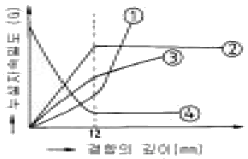
- ①
- ②
- ③
- ④
(정답률: 알수없음)
13. 용접부를 자분탐상검사할 때 용접후 열처리 등을 해야 할경우 합격여부 판정을 위한 시험시기로 알맞는 것은?
- 용접완료 후 바로 검사해도 된다.
- 용접완료 후 24시간 경과 후 검사를 해야 한다.
- 열처리 완료 후 검사해야 한다.
- 용접완료 후 12시간 경과 후 검사를 해야 한다.
(정답률: 알수없음)
14. 자기 쌍극자 중심축으로부터 r인 점의 자게의 세기는?
- r2에 비례
- r3에 비례
- r2에 반비례
- r3에 반비례
(정답률: 알수없음)
15. 단상 교류를 정류하여 생기는 전류는?
- 교류
- 반파직류
- 직류
- 충격전류
(정답률: 알수없음)
16. 자화전류의 종류와 선정방법에 관한 설명으로 옳지 못한 것은?
- 맥류는 표피효과가 전혀 생기지 않아 내부결함 검출 성능이 우수하다.
- 교류는 일반적으로 잔류법에는 사용되지 않는다.
- 충격전류는 일반적으로 연속법에는 사용되지 않는다.
- 교류에 의한 자화에서는 직류에 비해 반자장이 적다.
(정답률: 알수없음)
17. 작은 부품을 대량으로 검사를 하고자 한다. 이용할 수 있는 다음 전류중 가장 적당한 것은?
- 교류
- 직류
- 맥류
- 충격전류
(정답률: 알수없음)
18. 비파괴검사 결과를 판정할 때 판정자의 태도가 올바르다고 생각할 수 없는 것은?
- 유사 시험체에 대한 파괴시험 결과에 관심을 가진다.
- 다른 종류의 비파괴검사 결과와 비교 검토한다.
- 지시가 나타나면 불합격으로 판정한다.
- 비파괴시험전 이상부분의 성질을 예측하여 둔다.
(정답률: 알수없음)
19. 자분탐상시험에서 원형자화를 간접 유도하여 자화하는 방법은?
- 극간법
- 통전법
- 관통법
- 프로드법
(정답률: 알수없음)
20. 외경이 5인치인 부품을 직류를 사용하여 원형자화 시키려고 한다. 전류 값은?
- 500 ∼ 800A
- 800 ∼ 1,000A
- 3,500 ∼ 4,500A
- 5,000 ∼ 6,000A
(정답률: 알수없음)
2과목: 자기탐상검사
21. 산업기사 자격을 가진 검사원이 배관용접부를 자분탐상검사하다가 인근 용접경계면의 온둘레에 선명한 모양이 나타나서 자세히 관찰하더니 균열은 아닌 것 같다고 한다. 당신의 생각으로는 무엇이라고 판단되는가?
- 고수소 용접봉에 의한 의사모양이다.
- 이종금속에 의한 의사모양이다.
- 용접 슬래그를 제거하지 않아 발생한 허위지시이다.
- 잔류자기에 의한 지시이다.
(정답률: 알수없음)
22. 자분탐상검사시 자분의 적용법을 잘 설명하고 있는 것은?
- 환봉과 같은 중, 대형 검사품에는 휴대가 간편한 건식자분을 적용하는 것이 일반적이다.
- 표면 결함의 검출에는 항상 건식법을 사용해야 한다.
- 코일법에서는 습식 자분을 사용할 경우 솔질법을 적용해서는 안된다.
- 형상이 복잡하고 미세한 결함의 검출에는 습식법을 사용하는 것이 좋다.
(정답률: 알수없음)
23. 자분탐상시험에서 거친 용접부의 검사에 최대 감도를 얻기 위한 방법으로 맞는 것은?
- Wire brush로 용접부의 Scale과 Slag을 제거한다.
- 비교 목적으로 표준용접부를 사용한다.
- 용접 Bead에 Grease를 칠한다.
- 판재면과 같이 용접 bead를 평평하게 기계 가공한다.
(정답률: 알수없음)
24. 다음 중 시험체에 존재하는 결함이 잘 나타나게 하는 가장 기초적(근본적)인 기준은?
- 누설자속의 세기 - 누설자속의 지속성
- 자분의 유동성 - 시험체의 형태
- 자화전류의 종류 - 결함의 크기
- 시험체의 크기 - 결함의 크기
(정답률: 알수없음)
25. 자장계(field indicator)의 사용용도는?
- 자화포화점을 정밀 검출한다.
- 탈자여부를 확인한다.
- 보자력을 측정한다.
- 잔류자기량을 측정한다.
(정답률: 알수없음)
26. 자분탐상시험시 소형의 간편한 살포기를 사용하는 경우에는 검사액을 회수하지 않기 때문에 점검을 생략해도 좋은 항목이 많이 있다. 이 때 생략할 수 없는 점검항목은?
- 착색제, 형광제의 박리 정도
- 자분액의 농도
- 불순물의 혼입
- 형광 휘도
(정답률: 알수없음)
27. 다음 중 드릴구멍의 내부 또는 나사형태의 시험체를 검사하기 위한 가장 효율적인 자분탐상검사법은?
- 형광자분, 건식법
- 형광자분, 습식법
- 염색자분, 건식법
- 염색자분, 습식법
(정답률: 알수없음)
28. 용접구조물 제작 후 용접부 표면에 자분탐상시험을 했을 때 검출되지 않는 결함은?
- 응력부식 균열
- 고온 균열
- 냉간 균열
- 크레이터 균열
(정답률: 알수없음)
29. 그림의 자기이력곡선에서 A가 나타내는 것은?
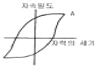
- 자기 포화점
- 항자력
- 잔류 자속 밀도
- 투자율이 높은 점
(정답률: 알수없음)
30. 자분탐상시험 장치의 자화전류를 전원부에서 조정할 때 계기는 어느 지시를 나타내는 것이어야 하는가?
- 평균치
- 초기 지시치
- 파고치
- RMS(root mean square)
(정답률: 알수없음)
31. 자분모양 중 잔류법을 적용한 시험품이 서로 접촉한 경우 나타나는 지시는?
- 자기펜 흔적
- 단면 급변지시
- 자극지시
- 전극지시
(정답률: 알수없음)
32. 유사모양 또는 의사지시모양의 판별법 중 잘못된 것은?
- 단면급변지시 : 자화정도를 약하게 하든가 잔류법으로시험한다.
- 투자율이 다른 재질경계지시 : 침투탐상시험 등 다른 시험방법으로 확인한다.
- 표면거칠기지시 : 표면 연마후 약품으로 부식시켜 금속 현미경에 의한 미시적 시험을 한다.
- 자극지시 : 접촉위치를 바꾸어 재자화한다.
(정답률: 알수없음)
33. 다음 중 하전입자법(Electrified Particle Test)의 원리가 아닌 것은?
- 양전기로 하전된 CaCO3분말을 자분으로 사용한다.
- 마찰전기 효과(Triboelectric Effect)
- 정전기 효과(Static Electricity)
- 분말은 대전량이 적은 것이 좋다.
(정답률: 알수없음)
34. 자분탐상검사는 침투탐상검사와는 달리 시험체 표면에 어느 정도의 도금과 같은 피막이 덮여 있어도 검사가 가능하다. 모든 검사조건과 피막의 두께가 동일하다면 다음중 탐상감도에 가장 적은 영향을 주는 재질의 종류는?
- 무기아연
- 크롬아연
- 페놀에폭시
- 에나멜
(정답률: 알수없음)
35. 다음 중 자분탐상검사에 사용되지 않는 부속 장치는?
- 자외선조사 장치
- 교류식 탈자기
- 습식자분 살포기
- 습식 현상기
(정답률: 알수없음)
36. 단조물 제품의 자분탐상시험에서 발견되는 불연속은?
- 랩(Lap)
- 핫 티어(Hot tear)
- 라미네이션(Lamination)
- 슬래그개입(Slag Inclusion)
(정답률: 알수없음)
37. 시험체의 보자성(Retentivity)이 큰 경우에 적용되며 표면의 불연속 검출에 국한되는 자분탐상시험법은?
- 잔류법
- 연속법
- 습식법
- 건식법
(정답률: 알수없음)
38. 직경 1.5인치, 두께 1/8인치인 파이프에 직접 1500[A]의 전류를 흘려 자화시켰다. 이 파이프의 내경 표면에서 자계의 세기는 어느 정도인가?
- 최대 값에 가깝다.
- 최대 값의 3/4 정도이다.
- 0
- 최대 값의 1/2 정도이다.
(정답률: 알수없음)
39. 직류로 자분탐상검사하여 어떤 지시를 얻었다. 이 지시가 표면에서 아주 가까이 있는 결함에 의한 것인지 또는 표면으로부터 깊숙히 있는 결함에 의한 것인지를 알아 보기 위한 방법으로 적당한 것은?
- 자분무늬를 잘 관찰한 뒤 닦아내고 표면을 관찰한다.
- 탈자한 뒤 교류로서 다시 검사해 본다.
- 탈자한 뒤 다시 자분을 적용하여 본다.
- 탈자한 뒤 충격전류로서 다시 검사해 본다.
(정답률: 알수없음)
40. 축통전법 사용시 일반적으로 요구되는 시험 전류값은?
- 시험물 두께 또는 직경 당 200 ∼ 400[A]
- 시험물 두께 또는 직경 당 500 ∼ 700[A]
- 시험물 두께 또는 직경 당 800 ∼ 1000[A]
- 시험물 두께 또는 직경 당 1100 ∼ 1300[A]
(정답률: 알수없음)
3과목: 자기탐상관련규격및컴퓨터활용
41. ASME Sec.V, Art.7에 의해 프로드법으로 자분탐상시험시 시험체 두께에 따른, 권고되는 프로드 간격별 전류치는?
- 3/4인치 미만 : 100∼125 [암페어/인치] 3/4인치 이상 : 90∼110 [암페어/인치]
- 3/4인치 미만 : 90∼110 [암페어/인치] 3/4인치 이상 : 100∼125 [암페어/인치]
- 1인치 미만 : 100∼125 [AT] 1인치 이상 : 90∼110 [AT]
- 1인치 미만 : 90∼110 [AT] 1인치 이상 : 100∼125 [AT]
(정답률: 알수없음)
42. KS D 0213에 의한 자화전류 설명으로 맞는 것은?
- 교류 및 충격전류를 사용할 때는 내부결함 검출에 사용된다.
- 직류 및 맥류를 사용하여 자화하는 경우는 연속법 및 잔류법을 사용할 수 있다.
- 교류는 표면하의 자화에서는 직류보다 강하다.
- 충격전류를 사용하여 자화하는 경우는 연속법에 한한다
(정답률: 알수없음)
43. KS D 0213에 따른 전처리 내용 중 잘못된 것은?
- 전처리의 범위는 시험범위보다 넓게 잡아야 한다.
- 시험체는 원칙적으로 단일부품으로 분해한다.
- 습식용 자분을 사용하는 경우는 표면을 잘 건조시켜 둔다.
- 필요에 따라 전극에 도체패드를 부착한다.
(정답률: 알수없음)
44. KS D 0213에 규정한 의사모양지시에 해당되지 않는 것은?
- 자기펜자국
- 자극지시
- 표면거칠기지시
- 오염지시
(정답률: 알수없음)
45. KS D 0213에서 자화방법을 표시한 기호 B가 의미하는 것은?
- 축통전법
- 프로드(Prod)법
- 전류관통법
- 극간법
(정답률: 알수없음)
46. KS D 0213의 A형 표준시험편에 A2-7/50의 표시가 있을 때 다음 중 틀린 설명은?
- 판의 두께는 50μm 이다.
- 인공 흠의 모양이 원형이다.
- 인공 흠의 깊이가 7μm 이다.
- 인공 흠의 모양이 직선형이다.
(정답률: 알수없음)
47. KS D 0213에 따라 코일법으로 자분탐상시험시 시험편을 분할하여 검사할 때의 설명으로 틀린 것은?
- 시험체가 너무 길은 경우 분할하여 검사한다.
- 분할한 시험면의 경계부는 이웃끼리의 유효자계가 겹쳐지도록 한다.
- 전류치는 전체 전류치를 분할 회수로 나눈 값으로 한다
- 시험체의 단면이 크게 급변하는 경우 분할하여 검사한다.
(정답률: 알수없음)
48. KS B 0213에서 시험의 기록시 자화전류치는 파고치를 기재한다. 코일법일 경우 부기하여야 할 내용은?
- 프로드간격
- 정류방식
- 코일의 치수,권수
- 사용된 대비시험편
(정답률: 알수없음)
49. KS D 0213 규격의 A형 표준시험편에서 A2가 A1보다 높은 유효자계의 강도로 자분모양이 나타나는 이유는?
- 가공하기 어렵기 때문
- 자기특성이 압연 방향과 그에 직각 방향에서 다르기 때문
- 어닐링처리를 하면 재료가 자기적으로 부드러워지기 때문
- 어닐링처리를 하면 이방성이 매우 작아지기 때문
(정답률: 알수없음)
50. ASME Sec.Ⅴ에서 규정한 형광자분탐상시 사용되는 자외선 조사등의 강도는 시험체 표면에서 최소 얼마 이상 되어야 하는가?
- 1000㎼/㎝2
- 500㎼/㎝2
- 300㎼/㎝2
- 100㎼/㎝2
(정답률: 알수없음)
51. A2형 표준시험편에는 원형 흠이 없는 이유는?
- 가공하기가 어렵기 때문
- 자기특성이 압연 방향과 그에 직각 방향에서 다르기 때문
- 어닐링처리를 하면 재료가 자기적으로 부드러워지기 때문
- 어닐링처리를 하면 이방성이 매우 작아지기 때문
(정답률: 알수없음)
52. KS D 0213에서 규정한 자화방법 중에서 원형자화를 얻는 방법이 아닌 것은?
- 축 통전법
- 전류 관통법
- 자속 관통법
- 프로드법
(정답률: 알수없음)
53. 코팅(Coating : 예, 페인트 칠, 래커칠 등)된 검사체를 자분탐상검사할 때 ASME Sec.V, Art.7에서 규정하고 있는 설명으로 다음 중 맞는 것은?
- coating된 것을 모두 벗기고 검사하여야 한다.
- 벗기지 않고도 결함을 검출할 수 있다는 것을 입증할 경우 벗기지 않고 검사할 수 있다.
- 벗기지 않을 경우 직류를 사용하여야 한다.
- 벗기지 않을 경우 교류를 사용하여야 한다.
(정답률: 알수없음)
54. ASME 규격에 의거 15mm 두께인 철판 용접부를 직류 프로드법으로 자분탐상검사시 프로드의 간격이 5인치이면 권고되는 전류치는?
- 50암페어
- 100암페어
- 500암페어
- 1000암페어
(정답률: 알수없음)
55. KS D 0213에 따라 연속한 자분모양으로 분류한 경우 다음 내용중 틀린 것은?
- 여러 개의 자분모양이 거의 동일 직선상에 있다.
- 최소 2개 이상의 자분모양이 있다.
- 서로의 거리가 두개중 긴쪽 길이보다 작게 떨어져 있다.
- 자분모양길이는 각각의 길이 및 서로의 거리를 합친 값으로 한다.
(정답률: 알수없음)
56. 다음 중 정보의 형태와 정보통신 서비스가 잘못 연결된 것은?
- 영상 : TV방송
- 데이터 : 전자 우편
- 화상 : 파일 전송
- 음성 : 음성 원격 회의
(정답률: 알수없음)
57. 다음 중 인터넷 검색엔진의 종류가 아닌 것은?
- Yahoo
- Galaxy
- 심마니
- MIME
(정답률: 알수없음)
58. 컴퓨터 바이러스에 감염되었을 때의 증상이 아닌 것은?
- 파일의 크기가 커진다.
- 엉뚱한 에러 메시지가 나온다.
- 프로그램의 실행이 되지 않는다
- 컴퓨터의 속도가 빨라진다.
(정답률: 알수없음)
59. 디스켓을 포맷할 때 포맷형식을 [시스템파일만 복사]로 선택하였을 때 복사되는 파일명은? (단, 숨겨진 파일 포함)
- COMMAND.COM
- MSDOS.SYS, IO.SYS
- MSDOS.SYS, IO.SYS, COMMAND.COM
- COMMAND.COM, AUTOEXEC.BAT, CONFIG.SYS
(정답률: 알수없음)
60. ROM에 상주하는 마이크로컴퓨터 운영체제내의 작은 프로그램이며, 시스템이 시동될 때 실행되어 주기억장치를 검사하며, 시스템 디스크에 있는 부트(boot)라고 하는 운영체제의 일부분을 RAM에 적재하게 하는 것은?
- 모니터(monitor) 프로그램
- 부트스트랩(bootstrap)
- 마이크로 프로그램(micro program)
- 부트 프로그램(boot program)
(정답률: 알수없음)
4과목: 금속재료학
61. 경도시험에서 나타내는 약어 표기가 틀린 것은?
- 비커즈 경도:HV
- 쇼어 경도:HS
- 브리넬 경도:HB
- 로크웰 경도:HL
(정답률: 알수없음)
62. 가단 주철은 열처리 하기 전의 주조상태에서 어떠한 주철상태가 바람직한가?
- 백주철 (white cast iron)
- 회주철 (grey cast iron)
- 반주철 (mottled cast iron)
- 펄라이트 주철 (pearlite cast iron)
(정답률: 알수없음)
63. 알루미늄 합금 중 개량처리(modification)의 효과를 가장 기대하는 합금계(실루민)는?
- Aℓ- Co계
- Aℓ- Si계
- Aℓ- Sn계
- Aℓ- Zn계
(정답률: 알수없음)
64. Cu를 4% 함유한 Aℓ합금을 고용체로 만든 다음 약 130℃로 유지시켰더니 시간의 경과에 따라 경도가 증가하는 것과 관계가 가장 깊은 것은?
- 가공경화
- 시효경화
- 고온경화
- 분산경화
(정답률: 알수없음)
65. 열처리에서 질량효과라는 것은 무엇을 의미하는가?
- 재료의 크기에 따라 담금질효과가 다르게 나타나는 현상
- 시효처리의 일종으로서 재료가 크면 내부가 더 약한 현상
- 가열시간의 차이에 따라 시효경화가 다르게 나타나는 현상
- 뜨임현상의 일종으로서 뜨임시간이 길면 강도가 작아지는 현상
(정답률: 알수없음)
66. 다음 중 Muntz metal의 설명이 옳은 것은?
- 20 %의 Zn이 첨가된다.
- α+ β조직이다.
- 상온에서 전연성이 아주 높다.
- 내식성이 크므로 기계 부품에는 사용될 수 없다.
(정답률: 알수없음)
67. 담금질시 균열이나 비틀림 방지 대책이 아닌 것은?
- 대상부품의 뾰족한 부분을 둥글게 한다.
- 급격한 단면형상을 갖도록 한다.
- 담금질 후 가능한 한 빨리 뜨임 처리하여 잔류응력을 제거한다.
- 필요이상의 고탄소강을 사용하지 않는다.
(정답률: 알수없음)
68. 보통주철의 재질에 대한 설명 중 틀린 것은?
- 보통주철은 성분범위가 C 2.5-4.0%, Si 0.5-3.5%, Mn 0.2-1.0%, P 0.03-0.8%, S 0.01-0.12%이다.
- C는 응고할 때 공정조직의 한 구성 요소인 편상 흑연(flake carbon)을 정출한다.
- C, Si 양이 낮을수록 공정량은 많아지고 주조성은 좋아진다.
- 보통 주철은 냉각속도가 빠를수록 Fe3C 를 정출한다.
(정답률: 알수없음)
69. 18K 금은 Au 의 함유율이 몇 % 정도 인가?
- 60%
- 75%
- 85%
- 90%
(정답률: 알수없음)
70. KS재료기호 중 SS400의 KS규격상 명칭은?
- 합금공구강40종
- 일반구조용 압연강재
- 열간압연 스테인리스 강판 및 강대
- 기계구조용 스테인리스 강재
(정답률: 알수없음)
71. 상업화에 활용되고 있는 FRM(섬유강화금속)에 사용되는 섬유의 종류가 아닌 것은?
- B
- SiC
- C
- Cr2O3
(정답률: 알수없음)
72. 강철에 포함된 Mn의 영향이 아닌 것은?
- 유동성 증가
- 담금성 양호
- 고온가공 용이
- 경도, 강도 감소
(정답률: 알수없음)
73. Al-Cu계 합금에 Si을 첨가하여 유동성이 좋으며, 피삭성, 용접성, 내기밀성이 양호하고 열처리가 가능한 합금은?
- 인코넬
- 라우탈
- 크로멜
- 퍼인바
(정답률: 알수없음)
74. 강의 표면경화 열처리에서 고체 침탄 촉진제로서 가장 많이 사용되는 것은?
- KCN
- KCl
- NaCl
- BaCO3
(정답률: 알수없음)
75. 청동합금에 탄성, 내마모성, 내식성 및 유동성 등을 향상시키기 위하여 첨가하는 원소는?
- Pb
- Zn
- P
- Aℓ
(정답률: 알수없음)
76. 강도와 탄성을 요구하는 스프링강의 조직으로 가장 적당한 것은?
- Martensite
- Sorbite
- Ferrite
- Austenite
(정답률: 알수없음)
77. 활자 합금(type metal)의 주성분으로 맞는 것은?
- Pb - Sb - Sn
- Pu - Zn - As
- Bi - Aℓ- Zn
- Cu - Si - Zn
(정답률: 알수없음)
78. 탄소강에서 Cementite(Fe3C)란?
- 철에 탄소가 고용된 고용체
- 철과 탄소의 금속간 화합물
- 철과 탄소가 합금되어 단상을 이룬 상태
- 선철에서만 존재하는 고용체
(정답률: 알수없음)
79. 황동(brass)의 설명이 틀린 것은?
- Cu와 Zn으로 된 황색 합금이다.
- 실용적으로는 대략 Zn이 약 30-40% 정도이다.
- Cu와 Sb의 합금을 말한다.
- 주조성, 가공성, 기계적 성질이 좋다.
(정답률: 알수없음)
80. 0.3% 탄소강의 723℃ 선상에서의 초석 α 의 량은 약 몇% 정도 되는가? (공석강의 탄소함량은 0.8% 임)
- 63%
- 79%
- 84%
- 89%
(정답률: 알수없음)
5과목: 용접일반
81. 용접시 발생하는 결함인 균열(crack)을 억제하기 위한 방법이 아닌 것은?
- 예열을 한다
- 후열을 한다
- 용접전류를 높인다
- 피닝을 한다
(정답률: 알수없음)
82. 피복금속 아크용접에서 아크가 용접의 단위 길이(1㎝)당발생하는 전기적 에너지 H(Joule/cm)는? (아크 전압은 E Volt, 아크전류를 I 암페어, 용접속도는V ㎝/min 라 한다.)
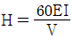
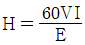
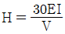
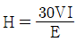
(정답률: 알수없음)
83. 피복 금속 아크 용접봉에 도포(塗布)되는 용제(Flux)의 기능(機能) 설명으로 틀린 것은?
- 특별한 자세(姿勢)의 용접을 쉽게 한다.
- 아크(arc)의 발생, 안전 및 유지를 용이하게 한다.
- 가스를 발생시켜서 대기(大氣)의 침입을 방지한다.
- 적당한 아크 전압과 용융점이 높은 슬랙을 만든다.
(정답률: 알수없음)
84. 아세틸렌 용기의 안전장치에 대한 설명으로 가장 적합한 것은?
- 질소를 가스 안정제로 주입하여 가스의 내부 폭발을 방지한다.
- 용기 상부 또는 하부에 가용 플러그를 장치하여 용기 내의 온도 상승시 녹아 터지도록 한다.
- 다공성 물질과 아세톤에서 모든 위험을 자연적으로 흡수하도록 고안되어 있다.
- 스프링식 안전 밸브가 부착되어 용기압이 올라가면 자동 방출하도록 되어있다.
(정답률: 알수없음)
85. 다음 중 습기가 있는 용접봉을 사용할 경우 해로운 점 설명과 가장 관계가 적은 것은?
- 피복이 떨어지기 쉽고, 아크가 불안정하다.
- 용착금속의 기계적 성질이 나빠진다.
- 기공이나 균열의 원인이 된다.
- 용접기를 손상시킨다.
(정답률: 알수없음)
86. 다음 용접 중 구리합금의 용접에 가장 적합한 것은?
- 산소 아세틸렌 용접
- 불활성가스 아크용접
- 일렉트로 슬래그용접
- 서브머지드 아크용접
(정답률: 알수없음)
87. 전기저항 점(Spot)용접의 전극(Electrode)재료에 대한 설명으로 틀린 것은?
- 피용접재와 합금되기 어려울 것
- 전기 전도도가 높을 것
- 열전도율이 낮을 것
- 기계적 강도가 클 것
(정답률: 알수없음)
88. 논 가스 아크용접의 장ㆍ단점 설명으로 틀린 것은?
- 전자세 용접이 가능하다.
- 보호가스나 용제의 공급이 필요하다.
- 용접 전원으로 교ㆍ직류를 모두 사용할 수 있다.
- 용접 길이가 긴 용접물은 아크를 중단하지 않고 연속용접을 할 수 있다.
(정답률: 알수없음)
89. 동 용접이 철강용접에 비해서 어려운 이유가 아닌 것은?
- 열전도율이 낮고 냉각속도가 크다.
- 산화동을 포함한 부분이 순동보다 먼저 용융하여 균열을 일으키기 쉽다.
- 동은 용융 시 산화가 심하며 가스 흡수로 용접부에 기공이 생기는 경우가 많다.
- 수소와 같은 확산이 큰 가스를 석출하며 그 압력으로 약점을 형성한다.
(정답률: 알수없음)
90. 납땜시 사용되는 용제(Flux)의 역할로 잘못 설명한 것은?
- 용접중 발생하는 산화물 제거
- 용접부의 인성을 증가
- 용가재의 유동성을 향상
- 모재 표면의 산화 방지
(정답률: 알수없음)
91. 용접후 용접변형을 교정하기 위한 방법이 아닌 것은?
- 피닝법
- 역변형법
- 얇은 판에 대한 점 수축법
- 후판에 대한 가열후 압력을 주어 수냉하는 법
(정답률: 알수없음)
92. 150㎏f/cm2의 압력으로 대기압하에는 6,000ℓ가 충전된 산소를 압력이 100㎏f/cm2 될 때까지 사용하였다면 산소 사용량은?
- 1200ℓ
- 1500ℓ
- 1800ℓ
- 2000ℓ
(정답률: 알수없음)
93. 미그(MIG)용접의 장점 설명으로 틀린 것은?
- 수동 아크용접에 비해 용착율이 높다.
- 박판 용접에는 적합하지 않다.
- 티그 용접에 비해 용융속도가 빠르다.
- 탄산가스 아크용접에 비해 스패터 발생이 많다.
(정답률: 알수없음)
94. 교류아크 용접기의 1차측 입력이 20[kVA]인 경우 가장 적합한 퓨즈의 용량은? (단, 이 용접기의 전원전압은 200V이다.)
- 100[A]
- 120[A]
- 150[A]
- 200[A]
(정답률: 알수없음)
95. 다음 용접 중 TIG 용접에서 모재에 열이 가장 많이 발생하는 가스와 극성은?
- Ar가스, DCRP 용접
- He가스, DCSP 용접
- Ar가스, DCSP 용접
- He가스, DCRP 용접
(정답률: 알수없음)
96. 모재는 전혀 녹이지 않고, 모재보다 용융점이 낮은 금속을 녹여 표면장력(원자간의 확산 침투)으로 접합하는 것을 의미하는 용어는?
- 융접(fusion welding)
- 압접(pressure welding)
- 납땜(brazing and soldering)
- 저항용접(resistance welding)
(정답률: 알수없음)
97. 연강용 피복 아크용접봉 중 내균열성이 가장 좋은 것은?
- 고셀룰로스계
- 티탄계
- 일미나이트계
- 저수소계
(정답률: 알수없음)
98. 용접부의 기공 발생 방지책 설명으로 틀린 것은?
- 위빙을 하여 열량을 늘리거나 예열을 한다.
- 충분히 건조한 저수소계 용접봉으로 바꾼다.
- 이음 표면을 깨끗하게 하고 적당한 전류로 조절한다.
- 용접속도를 빠르게 조절한 후 용접부를 급냉한다.
(정답률: 알수없음)
99. 피복금속 아크용접봉 E4316은 어떤 계통의 용접봉인가?
- 저수소계
- 철분수소계
- 철분 산화철계
- 고산화 티탄계
(정답률: 알수없음)
100. 탄산가스 아크 용접에 관한 다음 사항 중 틀린 것은?
- 이음가공에서의 이음 각도공차는 ±5°이내로 하는 것이 좋다.
- 아크 종점에서는 용입이 얕으므로 아크를 신속하게 정지시켜 크레이터의 발생을 막는다.
- 고장력강이나 합금강의 가접은 반드시 저수소계 용접봉을 사용하도록 한다.
- 2차 무부하 전압이 60V 정도인 경우, 콘택트 팁에 와이어가 용착하기 쉽다.
(정답률: 알수없음)